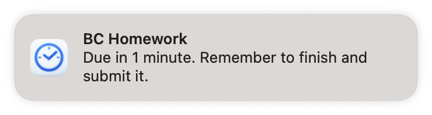
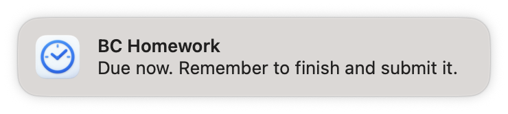

Capture it. Plan it later.
Drop a task into Inbox and carry on. It stays quiet until you’re ready to give it a deadline and a plan.
A small reminder app for your Mac
You know what you need to do. OnTimely helps you get started—with a simple plan and reminders before the deadline.
From “I’ll do it later” to done
Just the useful bits, from the first thought to the final submission.
Drop a task into Inbox and carry on. It stays quiet until you’re ready to give it a deadline and a plan.
Set the deadline, estimate the work, and add a safety buffer. OnTimely works out your latest safe start.
Repeated macOS notifications bring your task back to your attention. Get nudges to start, then reminders to finish and submit.
A core part of OnTimely
OnTimely keeps pinging you with macOS notifications, so your plan doesn’t disappear into a task list. It reminds you to start, then to finish and submit as the deadline gets close.
Choose how often reminders repeat. Confirm you’re working or snooze when you need more time, and mark the task done to stop its reminders.


See what’s coming
Calendar brings your planned tasks into view. Browse the month to see what’s due and what you’ve already finished, then switch to a day for a closer look.
See the time set aside for each task. Open a plan to check its suggested start, latest safe start, and deadline, or mark it as working or done.
Keep the thought
Some ideas need a place to land before they become a task. Keep them in Notes, right alongside your plans.
Write a quick thought or give a longer note some structure with headings, lists, links, and text formatting. Choose a note from the list and pick up where you left off.
Why OnTimely?
Sometimes the hard part is getting started. A due date on a list doesn’t tell you when to begin, or leave room for the final steps.
OnTimely is a small Mac app for that space in between. Put the task somewhere, give it a realistic plan, and let a reminder bring it back when you need it.
Explore the project on GitHubOnTimely requires macOS 14 (Sonoma) or later. The current release is a Mac app; there isn’t a Windows, iPhone, or Android version.
Download the latest OnTimely.dmg from GitHub, open it, and move OnTimely to your Applications folder. Open the app and follow the short setup to choose your reminder and update preferences.
On first launch, a quick setup lets you choose reminder defaults and automatic updates. Choose Use current settings to skip it.
Click an Active task’s title to edit its plan. Use a task’s menu to rename, delete, or return it to Inbox. To reuse a completed task, choose Reopen in Inbox in Done.
Keep OnTimely running for reminders. You can close its window and leave the app open.
Yes—keep OnTimely running for reminders. You can close its window and leave the app open. Quitting the app stops it from keeping its reminder schedule up to date.
Tasks in Inbox stay quiet. Choose Plan, review the timing, and click Activate reminders. Allow notifications for OnTimely in macOS System Settings, keep the app running, and check whether a Focus mode is silencing notifications.
It’s your deadline minus the estimated work time and safety buffer. If something is due at 6 PM, takes 90 minutes, and needs a 30-minute buffer, the latest safe start is 4 PM. You can choose an earlier suggested start, too.
Your tasks are stored locally on your Mac. You don’t need an account to use OnTimely. Checking for app updates connects to the update service; your task list stays on your Mac.
Choose your automatic update preference during setup or in Settings. To check manually, use OnTimely → Check for Updates…. You can also download the latest version from GitHub Releases.
Ready when you are
Download OnTimely and make a plan for the first one.